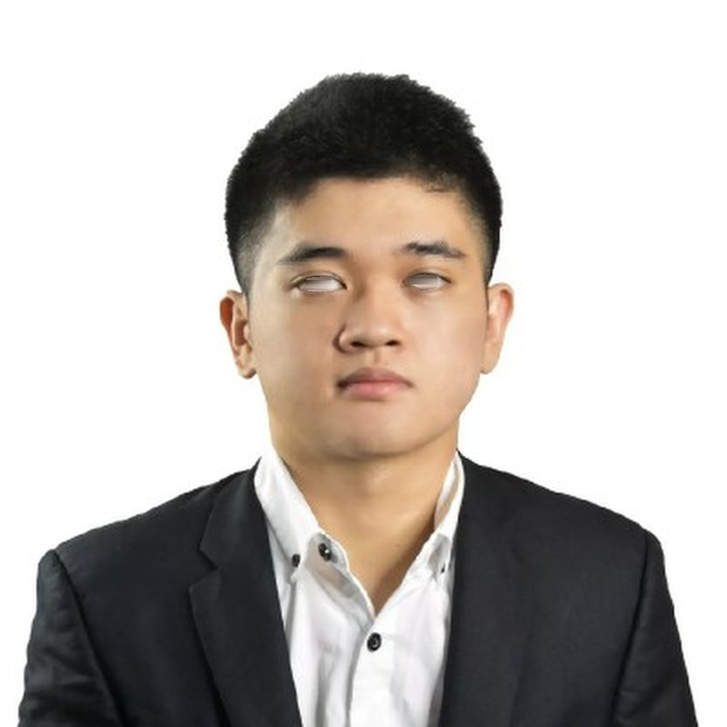
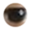
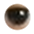

Analytics engineer and automation developer at Schneider Electric, with 5+ years across finance, insurance and tech. I build the data pipelines and models behind the dashboards, and automate the manual work around the numbers.



Filter by area, then pick a skill to see where I've used it.
A small coverage dashboard in the style of my Tableau work. Switch the coverage logic, filter zones, and turn on the join bug I spend a lot of time hunting in real data models.
Sample data made up for this demo. No company data is used anywhere on this site.
Real projects, described by the problem and the build. Numbers stay with my employer.
Tableau, Tableau Prep and Power Automate for finance and operations teams. On the interview panel for junior and senior Tableau developer hires.
Open to Tableau / BI, analytics engineering and automation roles, in Manila or abroad, and to freelance dashboard work.